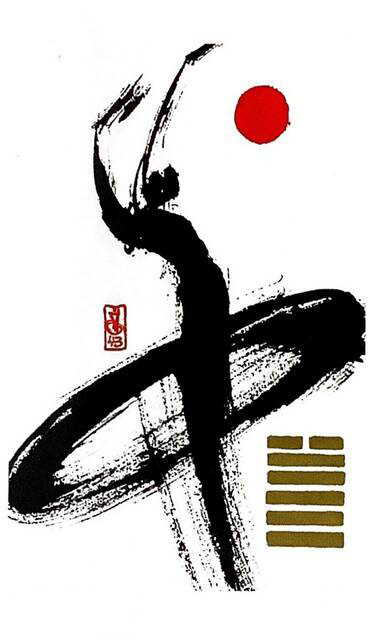

택천쾌
평괘 18
덩크슛(지금이순간 과감하게 덩크슛하는 그림 연상)
상하의 교류가 이루어져 생산적인 일이 이루어진다자신을 둘러싼 굴레에서 과감하게 벗어나는 상황을 표현한 그림타협도 두려움도 없으며 확고한 집념이 보인다
결단.결의.결정.해결하고 처치한다.단호함.굳은 결의.성실성.확고한 목표.명쾌.저항.투쟁.비판.긴장감.방해물
연애운
냉랭해진 관계.연애에 있어 냉철함.선을 그음.철벽남녀
사업운
변화에 대한 강한 결심.갈망.무리한 확장 금물
속마음
썸선을 긋고 철벽을 치는 마음
1년 이상냉랭해진 마음.골이 깊은 마음
이별 후이별을 받아 들이는 확고한 마음
솔로연애운
새로운 이성 생길 확률 낮다
건강운
질병이 오래간다.호흡기계 질병.구토.변비.부종 조심